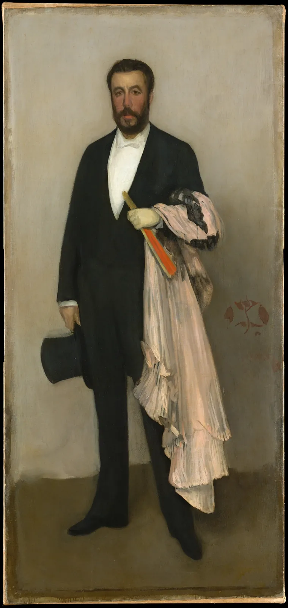

전단지 한 장에 할인 품목이 빼곡하게 들어찬 것과, 넓은 흰 종이 한가운데에 문장 하나만 놓인 것을 떠올려 보자. 앞의 것은 정보가 많은데 아무것도 기억나지 않고, 뒤의 것은 정보가 하나인데 오래 남는다. 차이를 만든 것은 그려 넣은 것이 아니라 비워 둔 것이다. 이 장은 그 비운 자리, 곧 여백이 화면에서 어떤 일을 하는지 본다. 여백은 남은 자리가 아니라 설계하는 자리이고, 채운 곳과 비운 곳의 대비, 곧 밀도의 대비가 화면에 숨과 초점을 만든다. 남송과 조선의 수묵화가 비단을 비워 물과 안개와 하늘을 그린 방식도 함께 본다.
여백이 하는 일(고립과 강조, 쉼, 묶음, 방향, 암시, 크기)을 구별하고 예를 든다.
같은 수의 요소도 몰리고 흩어지는 정도, 곧 밀도의 대비에 따라 다르게 읽힌다는 것을 시뮬레이터로 확인한다.
수묵화의 여백을 실제 작품에서 재 보고, 비운 자리가 그림의 일부로 일하는 방식을 설명한다.
디자인에서 여백을 늘리면 무엇을 내줘야 하는지(크기, 내용) 알고, 남은 여백과 설계한 여백을 구별한다.
빈자리는 비어 있지 않다
화면에서 그리거나 놓지 않은 자리를 여백(Negative space, White space)이라고 한다. 한자로는 餘白, "남은 흰 자리"라는 뜻이지만 이 장에서 다룰 여백은 남은 것이 아니다. 3장에서 형과 바탕을 볼 때, 그린 형태(양형) 사이의 바탕도 모양(음형)을 가진다는 것을 보았다. 여백은 그 생각을 화면 전체로 넓힌 것이다. 디자인에서는 흔히 의도해서 만든 활성 여백과, 요소를 놓고 나서 우연히 남은 수동 여백을 구별해 말한다. 바탕색이 꼭 흰색일 필요는 없다. 짙은 초록 바탕이어도 비어 있으면 여백이다.
먼저 같은 내용을 두 가지로 놓은 포스터를 비교한다. 아래 그림의 경계선을 좌우로 끌어 두 시안을 오간다. 두 시안에 들어간 요소(제목, 큰 그림, 작은 점, 정보 여섯 줄, 로고)는 같다. 다른 것은 요소의 크기와 그 사이의 빈자리뿐이다.
SIMULATOR
같은 내용, 다른 여백
시안 1의 여백률—
시안 2의 여백률—
해볼 것: ① 경계선을 천천히 끌며 두 시안에서 눈이 처음 닿는 곳을 비교한다. 시안 1은 모든 요소가 비슷한 크기로 가장자리까지 차 있어 첫눈이 머물 곳이 없다. ② "여백만 칠하기"로 바꾼다. 시안 1의 여백은 요소 사이에 남은 가는 띠뿐이고, 시안 2의 여백은 위쪽과 오른쪽에 큰 덩어리로 모여 있다. ③ "멀리서 보기"를 켠다. 길 건너에서 본 모습처럼 글자가 뭉개지면, 시안 1은 한 장의 무늬가 되고 시안 2는 제목, 그림, 정보 덩어리의 세 단위로 읽힌다. (여백률은 요소를 감싼 상자에 덮이지 않은 넓이의 비율이다. 글자는 줄 모양의 상자로 단순하게 그렸다.)
시안 2는 정보를 하나도 빼지 않았다. 정보 여섯 줄을 작은 덩어리 하나로 모으고, 제목과 그림을 조금 줄였을 뿐이다. 그런데 화면의 3분의 2가 비자 각 요소가 저마다의 자리를 갖게 되었다. 여백은 정보를 줄이는 기술이 아니라 정보를 읽히는 단위로 나누는 기술이다.
여백이 하는 일
여백은 한 가지 일만 하지 않는다. 아래 그림은 같은 작은 배 한 척, 같은 점 몇 개로 여백의 여섯 가지 쓰임을 보여 준다.
그림 1. 여백의 여섯 가지 일. ① 둘레를 비우면 작은 점 하나가 주인공이 된다. ② 빽빽한 부분 사이의 빈 띠는 눈이 쉬어 가는 자리이자 단락의 경계다. ③ 같은 점들도 사이의 빈 간격 때문에 두 무리로 묶인다(4장의 근접). ④ 배가 향하는 쪽을 비우면 움직임이 생긴다. ⑤ 산의 아랫부분만 그리고 위를 비우면, 빈자리가 안개나 구름이 된다. ⑥ 넓은 빈 물 위의 작은 배는 크기와 고요를 함께 만든다.
이 가운데 가장 많이 쓰이는 것은 ①의 고립이다. 주인공을 크게 하거나 밝게 하지 않아도, 둘레를 비우는 것만으로 눈이 그쪽으로 간다. 아래 시뮬레이터에서 붉은 점 하나를 회색 점들 사이에 놓고, 둘레를 얼마나 비울지 바꿔 본다. 붉은 점은 끌어서 옮길 수 있다.
SIMULATOR
둘레를 비우면 주인공이 된다
붉은 점을 끈다
주인공 둘레의 밀도 / 화면 평균—
고립 지수(교육용 근사)—
해볼 것: ① 비운 반지름을 0에서 15%까지 천천히 올린다. 붉은 점의 크기와 색은 그대로인데 어느 순간부터 화면의 중심이 된다. ② "주인공도 회색으로"를 켠다. 색의 도움 없이도 둘레가 빈 회색 점이 눈에 띄는지 본다. 고립만으로 주인공이 생긴다. ③ 반지름을 40%까지 올린다. 회색 점들이 가장자리로 밀려나 액자처럼 둘러싸고, 이번에는 빈자리 자체가 너무 커서 점이 그 안에서 길을 잃는다. 요소 수를 0으로 내리면 고립의 대상이 사라져 고립도 사라진다. (고립 지수 = 1 − 주인공 둘레 고리 안의 밀도 ÷ 화면 평균 밀도. 고리는 짧은 변의 20% 반지름. 실제 눈에 띄는 정도는 색·명도·크기 차이와 함께 정해진다.)
여기서 두 가지를 볼 수 있다. 첫째, 고립은 색과 크기만큼 강한 강조 수단이다. 둘째, 여백은 상대적이다. 주변이 빽빽해야 비운 자리가 비어 보이고, 모든 곳이 비면 비운 자리도 의미를 잃는다. 여백은 혼자 존재하지 않고 언제나 채운 자리와 짝을 이룬다.
붐빔: 주변 시야는 이웃에 약하다
시선이 닿지 않은 주변 시야에서는 물체 하나는 알아볼 수 있어도, 그 둘레에 다른 것이 가까이 있으면 알아보기가 갑자기 어려워진다. 지각 연구에서는 이를 붐빔(Visual crowding)이라고 부른다. 헤르만 부마(Herman Bouma)는 1970년 『네이처』에 실은 짧은 논문에서, 주변 시야의 글자를 알아보려면 이웃 글자와의 간격이 시선 중심에서 떨어진 거리의 대략 절반 이상이어야 한다고 보고했고, 이 관계는 지금 "부마의 법칙"으로 불린다. 데니스 펠리(Denis G. Pelli)와 캐서린 틸먼(Katharine A. Tillman)은 2008년 『네이처 뉴로사이언스』 리뷰에서 붐빔이 물체 인식 전반을 제한한다고 정리했다. 포스터 앞을 지나가는 사람은 대부분의 요소를 주변 시야로 먼저 본다. 둘레를 비운 요소가 먼저 알아보이는 데에는 이런 지각의 이유도 있다. 다만 이 연구들은 실험실의 글자·도형 과제에서 나온 것이므로, 포스터에 그대로 옮긴 수치 규칙으로 쓰지는 않는다.
밀도와 밀도의 대비
여백의 반대편에는 밀도(Density)가 있다. 밀도는 일정한 넓이 안에 요소가 얼마나 많이, 얼마나 촘촘히 들어 있는가다. 중요한 것은 밀도 그 자체보다 밀도의 대비(Density contrast), 곧 빽빽한 곳과 성긴 곳의 차이다. 화면 전체가 고르게 빽빽하거나 고르게 성기면 그것은 질감이 되고, 어딘가 몰리고 어딘가 비면 그 차이가 초점과 움직임을 만든다.
아래는 눈송이 같은 짧은 획 280개를 뿌린 화면이다. 획의 수는 언제나 같다. "몰림" 슬라이더로 획을 한곳에 모으는 정도를 바꾸고, 손잡이를 끌어 몰리는 자리를 옮긴다.
SIMULATOR
같은 수의 획, 다른 밀도 대비
손잡이로 몰리는 자리를 옮긴다
가장 빽빽한 칸 / 평균—
빈 칸(획이 없는 칸)—
해볼 것: ① 몰림을 0으로 둔다. 획 280개가 고르게 흩어져 눈이 머물 곳 없는 무늬가 된다. 가장 빽빽한 칸도 평균의 두 배를 잘 넘지 않는다. ② 몰림을 50~70%로 올린다. 한쪽에 눈보라가 몰리고 반대쪽이 비면서 화면에 바람의 방향이 생긴다. 손잡이를 3분할 근처로 옮겨 본다(9장). ③ 몰림을 100%, 크기를 가장 작게 한다. 모든 획이 한 점에 뭉쳐 하나의 얼룩이 되고 나머지는 텅 빈다. 대비가 극단에 이르면 밀도는 질감이 아니라 덩어리 하나가 된다. (칸은 가로 8 × 세로 5칸, 몰린 획은 손잡이 둘레에 정규 분포로, 나머지는 고르게 뿌렸다.)
몰림을 0으로 두었을 때와 중간으로 두었을 때 획의 수는 같았다. 다른 것은 빽빽한 곳과 빈 곳의 차이다. 화가가 눈 오는 풍경에서 눈송이를 화면 전체에 고르게 뿌리지 않고, 어떤 곳은 빽빽하게, 어떤 곳은 거의 비워 두는 이유가 여기에 있다. 디자인에서도 마찬가지다. 정보 여섯 줄을 화면 곳곳에 흩으면 화면 전체가 중간 밀도의 회색이 되지만, 한곳에 모으면 빽빽한 덩어리 하나와 넓은 여백이 생긴다. 이 장 첫 시뮬레이터의 시안 2가 그렇게 만들어졌다.
방향의 여백: 시선 앞의 공간
사람이나 동물, 탈것처럼 방향을 가진 것을 화면에 놓을 때, 그것이 향하는 쪽에 공간을 두면 움직임과 기대가 생긴다. 사진에서는 이것을 리드 룸(Lead room, Looking room)이라고 부른다. 반대로 향하는 쪽이 막혀 있고 등 뒤가 비어 있으면, 막 지나온 것 같거나 갇힌 것처럼 보인다. 아래에서 새를 좌우로 끌고, 새가 보는 방향을 바꿔 본다.
SIMULATOR
새가 보는 쪽을 비울까, 등 뒤를 비울까
새를 좌우로 끈다
앞쪽 공간—
등 뒤 공간—
흔히 읽히는 인상—
해볼 것: ① 새를 왼쪽 3분의 1 근처에 두고 오른쪽을 보게 한다. 앞쪽에 넓은 하늘이 열려 날아갈 곳이 보인다. ② 새를 오른쪽 가장자리로 끈다. 같은 새가 벽에 부딪힐 듯 갇혀 보이고, 등 뒤의 넓은 빈자리는 "이미 지나온 곳"이 된다. ③ 그 상태에서 "바람 자국"을 켠다. 등 뒤의 여백이 지나온 흔적으로 채워지면, 갇힌 느낌이 "막 지나간 속도"로 바뀐다. 규칙을 깬 배치도 이유가 보이면 읽힌다. (인상은 흔히 쓰는 설명이며 이 책의 해석이다. 읽기 방향이 다른 문화권에서는 좌우의 느낌이 다를 수 있다는 주장이 있지만 근거는 엇갈린다.)
방향의 여백은 쇼윈도에서도 쓸 수 있다. 펼친 책 표지 속 인물이나 소품의 머리가 향하는 쪽을 비우면, 지나가는 사람의 눈도 그쪽으로 따라간다. 5장에서 본 방향선이 빈자리를 만나 시선의 길이 되는 셈이다.
동아시아 회화의 여백
여백을 가장 깊이 다룬 전통 가운데 하나가 동아시아의 수묵화다. 비단이나 종이에 먹으로 그린 이 그림들은 하늘, 물, 안개, 눈을 대개 칠하지 않고 바탕 그대로 남긴다. 그 빈자리는 "아직 그리지 않은 곳"이 아니라 그림 속에서 분명한 역할을 맡은 곳이다. 동아시아의 서화론에서는 채운 것(實)과 빈 것(虛)이 서로를 살린다는 "허실상생"(虛實相生)이라는 말이 쓰이고, 서예에서는 "흰 곳을 검은 곳처럼 헤아린다"는 "계백당흑"(計白當黑)이 청나라 서예가 등석여의 말로 전한다. 글자의 획만이 아니라 획 사이의 흰 자리까지 함께 설계하라는 뜻이다.
남송(1127~1279)의 궁정 화가 마원(Ma Yuan, 1190~1225년경 활동)은 화면의 한쪽 구석에 경물을 몰고 나머지를 넓게 비우는 구도로 유명해서, 후대에 "마일각"(馬一角, 한 귀퉁이의 마원)이라는 별명이 붙었다. 함께 이름을 날린 하규는 화면의 반쪽에 경물을 모아 "하반변"(夏半邊)이라 불렸다. 아래 그림이 마원의 작은 화첩 그림이다.
그림 2. 마원, 「폭포를 바라보는 선비」, 13세기 초, 남송. 소나무, 바위, 선비와 시동, 폭포가 모두 화면의 왼쪽 아래 절반에 몰려 있고, 오른쪽 위는 옅은 안개뿐이다. 이 빈자리는 폭포 소리가 퍼져 나가는 골짜기의 공기이고, 선비가 바라보는 쪽이다. 소나무 가지가 빈자리 쪽으로 뻗어 채운 곳과 빈 곳을 잇는다. 화면을 대각선으로 나눠 한쪽은 빽빽하게, 한쪽은 비게 만든 밀도의 대비가 이 그림의 구도다.메트로폴리탄 미술관 소장(Ex coll.: C. C. Wang Family, Gift of The Dillon Fund, 1973), 화첩 한 면, 비단에 먹과 채색. 공공 도메인(The Met Open Access, CC0). 원본 사진의 화첩 바탕을 잘라 내고 그림 면만 보인다. 소장처 작품 페이지 · 크레딧
이 대각선 구도를 숫자로 재 본다. 아래 시뮬레이터는 그림의 각 점이 비단 바탕보다 얼마나 어두운지를 보고 "먹이 간 곳"과 "빈 곳"을 가른다. 기준 슬라이더로 얼마나 어두워야 먹으로 칠지를 정하고, 화면 위의 선을 끌어 나누는 대각선을 바꾼다. 조선 초기의 산수화 「평사낙안」으로도 바꿔 본다(ColorBook 6장에서 명도로 본 그림이다).
SIMULATOR
수묵화의 여백 지도
나누는 선의 끝점을 끈다
먹이 간 넓이(전체)—
선의 양쪽: 먹 넓이—
해볼 것: ① 마원을 기준 10으로 본다. 이 책의 사진에서 계산하면 먹이 간 곳은 화면의 약 31%이고, 대각선 오른쪽 위는 13% 남짓, 왼쪽 아래는 48% 남짓이 먹이다. 한쪽이 다른 쪽보다 3.5배쯤 빽빽하다. ② 선의 끝점을 끌어 화면을 가로나 세로로 나눠 본다. 대각선으로 나눌 때 양쪽 차이가 가장 크다. 이 그림의 밀도 대비는 대각선을 따라 짜여 있다. ③ 평사낙안으로 바꾸고 선을 가로로 놓는다. 먹이 간 곳은 화면의 10%도 안 되고, 그나마 아래쪽에 몰려 있다. 그림의 대부분이 물, 안개, 하늘로 쓰인 빈 비단이다. (비단 바탕의 명도는 그림 L*의 상위 30% 경계값으로 잡았다. 오래된 비단은 고르게 바래지 않고 사진마다 색이 달라 이 값은 대략적이다.)조선 그림: 작가 미상, 「평사낙안(모래톱에 내려앉는 기러기)」, 15세기 말~16세기 초, 비단에 먹, 족자(표구 부분을 잘라 냄). 메트로폴리탄 미술관 소장, 공공 도메인(The Met Open Access, CC0). 소장처 작품 페이지 · 크레딧
두 그림 모두 그려 넣은 곳보다 비워 둔 곳이 훨씬 넓다. 그러나 그 빈자리는 똑같은 빈자리가 아니다. 마원의 빈자리는 선비가 바라보는 골짜기의 공기이고, 평사낙안의 빈자리는 기러기가 내려앉는 넓은 물과 저녁 하늘이다. 화가는 빈자리의 모양과 자리를 정해 그것이 무엇이 될지를 정했다. 같은 비단이라도 산 아래에 있으면 물이 되고, 산허리에 걸리면 안개가 되고, 산 위에 있으면 하늘이 된다.
두루마리처럼 펼쳐 가며 보는 긴 화면에서는 여백이 시간의 역할도 한다. 빽빽한 장면과 빈 물길이 번갈아 나오며 보는 사람의 걸음을 늦추고 서두르게 한다. 이 시간적인 화면은 13장에서 명작을 읽을 때 다시 만난다.
칠하지 않고 남기기
수채화와 수묵화에서 가장 밝은 자리는 물감이 아니라 종이 자체다. 그래서 여백은 나중에 덧칠해 만들 수 없고 처음부터 "남겨야" 한다. 숙련된 화가들은 붓을 대기 전에 연필로 비울 자리의 모양을 먼저 가볍게 그리거나, 마스킹액으로 막아 둔다. 비울 자리를 정하지 않고 칠하기 시작하면, 칠한 것들 사이에 남은 빈자리가 가는 틈과 조각으로 흩어져 아무 역할도 하지 못한다. 이렇게 우연히 남은 작은 여백은 디자인에서 말하는 "갇힌 여백"과 같다. 비울 곳은 덩어리로, 형태를 가지게 계획한다.
서양 회화와 디자인의 여백
서양 회화에도 여백을 크게 쓴 그림이 많다. 19세기 후반 유럽과 미국의 화가들은 일본 판화와 동아시아 미술에서 넓은 빈 바탕과 한쪽으로 치우친 배치를 배워 자기 그림에 들였는데, 이 흐름을 흔히 자포니슴(Japonisme)이라고 부른다. 미국 출신 화가 제임스 맥닐 휘슬러는 그 대표적인 화가 가운데 하나다.

그림 3. 제임스 맥닐 휘슬러, 「살색과 검정의 배열: 테오도르 뒤레의 초상」, 1883. 배경에는 방도 가구도 없다. 옅은 바탕이 검은 옷의 실루엣을 둘러싸 형태를 또렷하게 하고, 분홍 망토와 부채가 그 고요한 바탕 위에서 작은 사건이 된다. 바탕의 넓은 빈자리는 인물의 사회적 배경을 설명하는 대신 색과 형태의 "배열"에 눈을 돌리게 한다. 제목부터 그림을 음악처럼 "배열"이라 부른 휘슬러의 태도가 여백에서 드러난다.메트로폴리탄 미술관 소장(Catharine Lorillard Wolfe Collection, Wolfe Fund, 1913), 캔버스에 유채. 공공 도메인(The Met Open Access, CC0). 소장처 작품 페이지 · 크레딧
디자인에서는 여백을 더 구체적인 몇 가지로 나눠 다룬다. 지면의 가장자리를 둘러싼 바깥 여백(마진), 무리와 무리 사이의 간격, 글줄 사이의 행간, 글자 사이의 자간이다. 바깥 여백은 화면을 둘러싸는 액자처럼 내용을 가장자리의 긴장에서 떼어 놓고, 간격은 무엇이 함께 묶이는지를 알려 준다(4장). 행간과 자간은 TypeBook에서 깊게 다룬다.
그런데 여백은 공짜가 아니다. 같은 넓이의 지면에서 여백을 늘리면 내용이 쓸 수 있는 넓이가 줄어든다. 그러면 요소를 작게 하거나, 내용을 줄여야 한다. 아래에서 A2 포스터의 바깥 여백을 늘려 가며 무엇이 줄어드는지 본다.
SIMULATOR
여백을 늘리면 무엇을 내줘야 하나
여백률—
정보 글자 높이(A2 실제 크기)—
상태—
해볼 것: ① 바깥 여백을 4%에서 10%로 올린다. 화면이 갑자기 정돈되고 내용이 액자 안에 들어간 것처럼 보인다. 대신 정보 글자가 조금 작아진다. ② 무리 사이 간격을 1.5%에서 6%로 올린다. 제목, 그림, 정보가 따로따로 읽히기 시작한다. ③ 바깥 여백을 20% 넘게 올린다. 정보 글자 높이가 이 책이 정한 하한(8mm)보다 작아지면 경고가 뜬다. 여기서 "정보를 줄인다"를 켜면 같은 여백에서도 글자가 다시 커진다. 여백을 늘리는 일은 결국 무엇을 덜어 낼지 고르는 일이다. (내용은 바깥 여백 안쪽에 제목 18%, 그림 52%, 정보 30%의 높이 비율로 채운다. 정보 글자 높이는 한 줄의 글자 수가 정보 덩어리 폭(내용 폭의 70%)에 들어가도록, 글자 폭을 높이의 0.55배로 어림해 계산한다. 하한 8mm는 1~2m 거리에서 읽는 포스터를 위해 이 책이 둔 가정이며 표준이 아니다.)
"여백이 많으면 고급스럽다"는 말
디자인 업계에서는 여백이 넓으면 고급스럽고 차분해 보이고, 빽빽하면 싸고 활기차 보인다는 말이 자주 오간다. 그런 연상이 일부 문화와 시장에서 흔히 쓰이는 것은 사실이지만, 여백의 양만으로 인상이 정해진다는 확고한 연구 근거는 이 책이 확인하지 못했다. 시장의 좌판, 축제 포스터, 만화의 한 면처럼 빽빽함 자체가 활기와 풍성함을 전하는 좋은 화면도 많다. 여백을 늘릴지는 "고급"이라는 꼬리표가 아니라, 그 화면이 무엇을 먼저 전해야 하는지, 보는 사람이 얼마나 멀리서 얼마나 오래 보는지로 정한다.
여백을 설계하는 법
여백을 "남기는" 대신 "설계하려면" 몇 가지 습관이 도움이 된다. 첫째, 요소보다 빈자리를 먼저 본다. 썸네일 스케치에서 비울 덩어리의 모양과 자리를 먼저 그린다. 둘째, 여백을 크게 한두 덩어리로 모은다. 같은 넓이의 여백이라도 요소 사이에 고르게 흩어지면 아무 역할도 못 하고, 모이면 쉼과 초점이 된다. 셋째, 간격에 위계를 둔다. 한 무리 안의 간격은 좁게, 무리와 무리 사이는 넓게, 바깥 여백은 가장 넓게. 넷째, 어중간한 간격을 없앤다. 붙일 것은 확실히 붙이고, 뗄 것은 확실히 뗀다.
갇힌 여백 찾기
디자이너들이 시안을 점검할 때 자주 보는 것이 갇힌 여백(Trapped white space)이다. 요소들 사이에 끼어 어느 쪽에도 속하지 않는 작은 빈 조각, 너무 좁아 쉼도 되지 못하고 너무 넓어 묶음도 되지 못하는 틈이다. 찾는 법은 간단하다. 시안을 흑백으로 바꾸고 여백만 다른 색으로 칠해 본다(이 장 첫 시뮬레이터의 "여백만 칠하기"). 큰 여백 덩어리에 이어지지 않는 작은 조각이 보이면, 그 조각을 옆의 큰 여백에 합치거나 요소를 붙여 없앤다. 쇼윈도라면 길 건너에서 사진을 찍어 같은 방법으로 본다.
같은 풍경, 세 가지 여백
엽서 크기 종이 세 장에 같은 풍경(나무 한 그루와 먼 산, 또는 창밖의 지붕)을 먹이나 연필로 그린다. 첫째 장은 화면을 거의 다 채운다. 둘째 장은 화면의 절반을 비운다. 셋째 장은 화면의 3분의 2 이상을 비우고, 비운 자리가 무엇이 될지(하늘, 물, 안개, 눈밭) 미리 정한 뒤 그 모양을 연필로 가볍게 둘러 놓고 시작한다. 세 장을 벽에 나란히 붙이고 3m쯤 물러나서 본다. 어느 장이 가장 멀리서 읽히는지, 비운 자리가 정말 하늘이나 물로 보이는지 확인한다. 마지막으로 셋째 장의 빈자리에 아주 작은 것 하나(새 한 마리, 배 한 척)를 그려 넣어 빈자리의 크기가 어떻게 달라 보이는지도 본다.
마지막 시뮬레이터는 서윤의 낭독회 포스터를 다시 짜는 작업대다. 요소를 끌어 옮기고 바깥 여백 기준을 정하면, 여백률, 가장 큰 빈 덩어리, 어중간한 간격과 가장자리 침범을 바로 알려 준다. 두 시안(빽빽한 시안 1, 여백을 둔 시안 2)에서 출발해 직접 바꿔 본다.
SIMULATOR
여백 작업대: 낭독회 포스터 다시 짜기
요소를 끈다
여백률—
가장 큰 빈 덩어리(지면 대비)—
점검—
해볼 것: ① 시안 1과 시안 2를 번갈아 누른다. 여백률이 약 21%에서 약 67%로, 가장 큰 빈 덩어리가 지면의 약 4%에서 약 30%로 커진다. ② 시안 2에서 정보 덩어리를 그림 바로 아래, 간격 2~3% 자리로 끈다. "어중간한 간격" 표시가 뜬다. 붙이려면 더 붙이고, 떼려면 더 뗀다. ③ 바깥 여백 기준을 15%로 올려 어느 요소가 기준선을 넘는지 본다. 기준을 0으로 내리면 가장자리 점검이 꺼지고, 시안 1의 문제였던 "끝까지 찬 화면"이 아무 경고 없이 통과된다. 기준은 도구가 아니라 디자이너가 정한다. (여백률은 요소 상자에 덮이지 않은 넓이, 가장 큰 빈 덩어리는 요소와 겹치지 않는 가장 큰 직사각형이다. 어중간한 간격은 두 요소 사이가 폭의 1%보다 넓고 4%보다 좁을 때로 이 책이 정했다.)
작업대에서 본 것처럼 여백률이라는 숫자 하나로는 충분하지 않다. 시안 2의 여백이 효과적인 것은 넓어서만이 아니라 큰 덩어리로 모여 있고, 요소 사이의 간격에 위계가 있기 때문이다. 같은 67%라도 요소를 화면 곳곳에 흩으면 다시 모든 곳이 어중간해진다.
서윤의 작업 노트
CASE 서윤작업 노트 · 10장
숨이 막히는 포스터, 빈 하늘의 골목
9장에서 제목 띠를 위쪽으로 옮긴 뒤, 서윤은 낭독회 정보(낭독자 이름, 책 제목, 날짜, 시간, 장소, 신청 방법) 여섯 줄을 남은 자리에 채워 넣었다. 처음 시안은 제목, 그림, 정보가 모두 지면의 가장자리 3% 안쪽까지 가득했다. 이 장의 작업대로 재 보니 여백률은 약 21%였고, 남은 여백은 요소 사이의 가는 띠뿐이었다. 주인은 "필요한 건 다 있는데 뭘 봐야 할지 모르겠다"고 했다.
도경은 시안을 흑백으로 복사해 여백만 연필로 칠해 보게 했다. 칠한 자리는 요소 사이와 가장자리에 남은 가늘고 긴 띠뿐이었다. "여백이 없는 게 아니라 쪼개져 있는 거야. 조각들을 모아 봐." 서윤은 정보를 하나도 빼지 않는 대신, 여섯 줄을 지면 아래쪽의 한 덩어리(가로 약 200mm × 세로 약 55mm, 줄 간격 약 9mm)로 모았다. 큰 면(그림)과 작은 점은 9장에서 정한 크기와 자리 그대로 두고, 제목은 위쪽 띠(세로 30~40%)에 놓았다. 양옆 바깥 여백은 폭의 10%, 곧 42mm로 정했다. 그러자 제목 위의 지면 3분의 1이 통째로 비었다. 작업대의 계산으로 여백률은 약 67%, 가장 큰 빈 덩어리는 지면 위쪽을 가로지르는 한 덩어리로 지면의 약 30%가 되었다(처음 시안은 약 4%).
서윤은 처음에 위쪽이 너무 비어 "덜 만든 것 같다"고 걱정했다. 도경은 책장에서 조선 산수화 도록을 꺼내 「평사낙안」을 펼쳤다. "그림의 반이 비단 그대로야. 그런데 아무도 덜 그렸다고 안 하지. 빈 데가 하늘이 되니까." 서윤은 위쪽 여백이 겨울밤의 하늘처럼 읽히도록 7장에서 정한 크림 바탕을 그대로 두고, 아무것도 넣지 않기로 했다. 대신 주인에게 "멀리서 제목과 그림만 먼저 보이고, 다가오면 정보가 보이는" 순서를 길 건너에서 휴대폰 사진으로 확인시켜 주었다.
같은 주에 서윤은 「눈 오는 골목」의 썸네일 셋을 그렸다. 골목 양쪽 벽과 지붕을 화면 아래 3분의 2에 몰고, 위쪽 하늘을 화면 높이의 약 40%만큼 종이 그대로 남기는 안을 골랐다. 눈송이는 화면 전체에 고르게 뿌리지 않고, 가로등 불빛 둘레에만 몰아 남긴다(이 장의 밀도 대비). 도경의 조언대로 하늘과 눈송이 자리는 연필로 가볍게 둘러 표시하고 마스킹액으로 막은 뒤 칠하기로 했다. 서윤은 도경에게 작업대의 "여백만 칠하기"를 휴대폰 사진에 대는 법을 알려 주었고, 도경은 자기 스케치를 찍어 빈자리가 몇 덩어리로 나뉘는지 세어 보았다.
이 장에서 정한 것포스터 여백 비율과 「눈 오는 골목」의 빈 하늘(서윤의 선택). ① 포스터는 여백률 약 3분의 2(작업대 계산 약 67%)를 목표로, 여백을 제목 위쪽의 큰 한 덩어리로 모은다. ② 양옆 바깥 여백은 폭의 10%(42mm) 이상. ③ 정보 여섯 줄은 빼지 않고 아래쪽 한 덩어리(약 200 × 55mm)로 모아 빽빽한 곳 하나와 넓은 빈 곳의 대비를 만든다. ④ 요소 사이 간격은 붙일 것은 1% 안, 뗄 것은 4% 이상으로 하고 그 사이 어중간한 간격을 두지 않는다. ⑤ 「눈 오는 골목」은 위쪽 약 40%를 종이 그대로 남긴 하늘로, 눈송이는 가로등 둘레에 몰아 남긴다. 다른 선택지, 곧 여백률 50% 안팎으로 그림을 더 크게 쓰는 안도 기록해 둔다.
아직 남은 문제포스터 큰 면 자리에 5장의 등불 그림 대신 쇼윈도 사진을 넣고 싶은데, 4:3 사진을 이 자리의 비율에 맞추려면 어딘가를 잘라야 한다. 같은 사진을 웹과 SNS에도 써야 한다.
여백은 그리거나 놓지 않은 자리이며, 남은 자리(수동 여백)가 아니라 설계하는 자리(활성 여백)일 때 일한다. 바탕색과 상관없이 비어 있으면 여백이다.
여백은 고립과 강조, 쉼, 묶음, 방향, 암시, 크기와 고요를 만든다. 둘레를 비우는 것만으로 색이나 크기 없이 주인공이 생긴다.
여백은 상대적이다. 채운 곳이 있어야 비운 곳이 비어 보이며, 중요한 것은 밀도 자체보다 빽빽한 곳과 성긴 곳의 대비다.
방향을 가진 대상은 향하는 쪽에 공간을 두면 움직임이 생기고, 반대로 두면 갇히거나 지나간 것으로 읽힌다. 깨더라도 이유가 보이면 읽힌다.
수묵화는 비단과 종이를 비워 물, 안개, 하늘을 만든다. 마원은 대각선의 한쪽에 경물을 몰아 강한 밀도 대비를 만들었고, 빈자리의 모양과 자리가 그것이 무엇이 될지를 정한다.
여백은 공짜가 아니다. 같은 지면에서 여백을 늘리면 요소를 작게 하거나 내용을 덜어야 한다. "여백 = 고급" 같은 연상은 근거가 확립된 규칙이 아니다.
여백은 큰 덩어리로 모으고, 간격에 위계를 두고, 어중간한 간격과 갇힌 여백을 없앤다. 여백률 하나보다 여백의 모양과 모임이 중요하다.
확인 퀴즈
1. 정보를 하나도 빼지 않고 포스터의 여백률을 21%에서 67%로 늘렸다. 가장 가능성 높은 방법은?
여백률은 요소에 덮이지 않은 넓이의 비율이라 바탕색과는 상관없다. 정보를 빼지 않고 여백을 늘리려면 요소를 작게 하거나 모아야 하고, 효과적인 여백은 큰 덩어리로 모일 때 생긴다. 간격을 고르게 넓혀 퍼뜨리면 요소가 지면 전체로 흩어져 여백률은 크게 늘지 않고 어중간한 간격만 많아진다. 굵은 글자는 오히려 지면을 더 무겁게 한다.
2. 회색 점이 가득한 화면에서 붉은 점 하나를 눈에 띄게 하고 싶은데, 붉은 점의 색과 크기는 바꿀 수 없다. 이 장에서 본 방법으로 가장 알맞은 것은?
둘레를 비우는 고립은 색이나 크기 없이도 주인공을 만드는 강한 강조 수단이다. 점을 더 추가하면 붉은 점이 묻히고, 가장자리에 붙이면 밀려나는 긴장이 생길 뿐 강조되지 않으며, 모든 점을 같은 색으로 바꾸면 색의 차이까지 사라진다.
3. 남송의 마원이 「폭포를 바라보는 선비」에서 쓴 구도에 대한 설명으로 가장 알맞은 것은?
마원은 한 귀퉁이에 경물을 몰고 나머지를 비우는 구도로 "마일각"이라는 별명을 얻었다. 이 책의 사진에서 재면 대각선 왼쪽 아래의 먹 넓이가 오른쪽 위의 3.5배쯤 된다. 빈자리는 미완성이 아니라 공기와 안개의 역할을 한다. 황금 나선을 썼다는 기록은 없으며, 9장에서 본 것처럼 나선은 사후에 무엇에나 맞출 수 있다.
4. A2 포스터의 바깥 여백을 4%에서 25%로 늘렸더니 정보 글줄이 너무 작아졌다. 여백을 지키면서 이 문제를 풀 방법으로 가장 알맞은 것은?
같은 지면에서 여백을 늘리면 요소를 작게 하거나 내용을 덜어야 한다. 여백과 읽힘 사이에서 무엇을 내줄지 고르는 것이 설계다. "여백 = 고급"은 근거가 확립된 규칙이 아니고, 행간을 0으로 줄이면 정보 덩어리가 읽히지 않는다. 종이를 줄이면 글자는 더 작아진다.